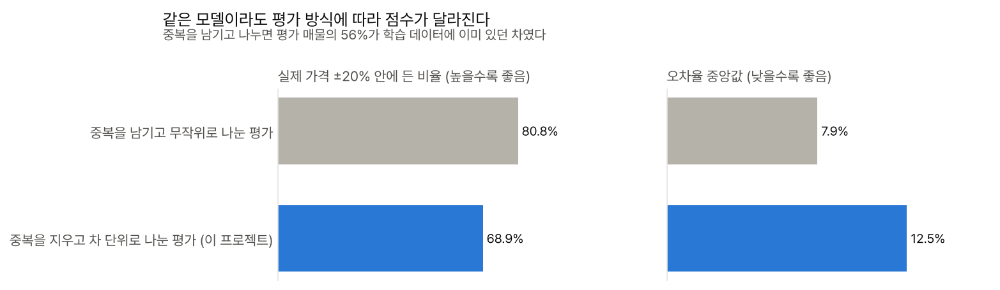
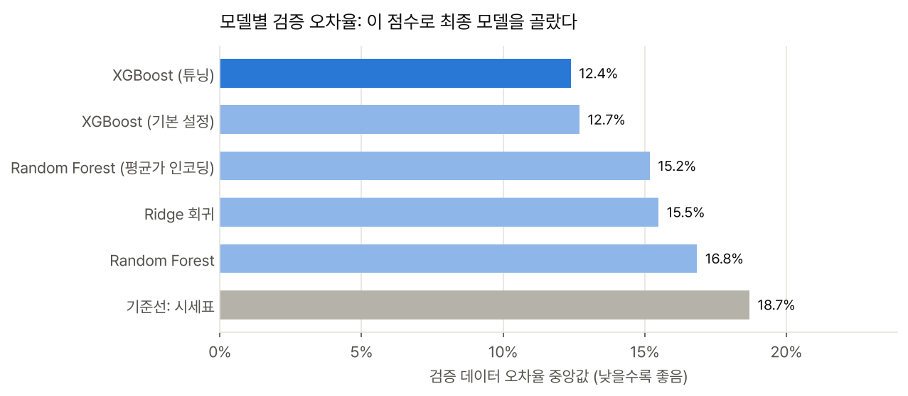
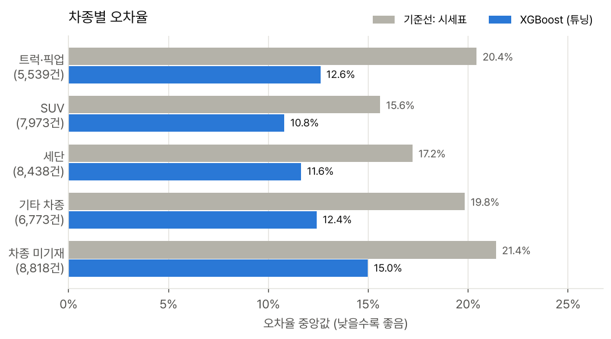
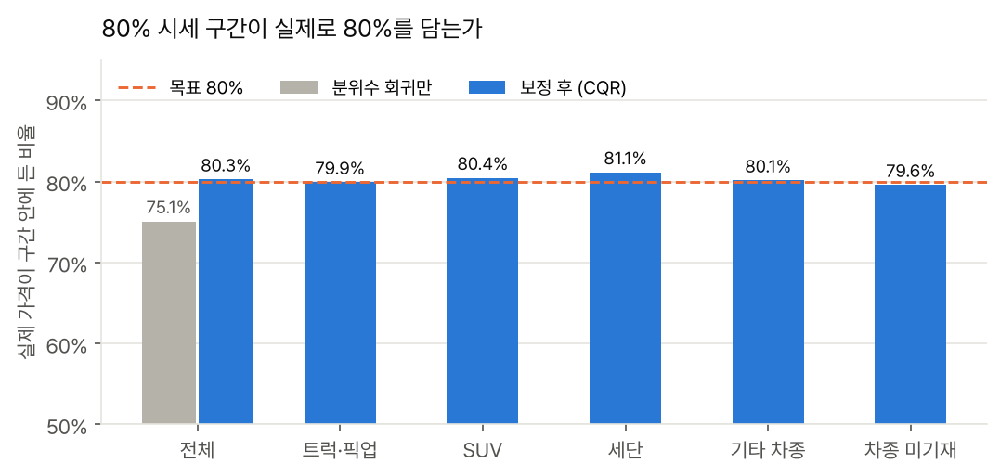

실제 중고차 매물 426,880건을 정제해 시세 예측 모델을 만들고, 점수가 부풀려지지 않는 평가 방식으로 비교한 뒤 80% 시세 구간과 가격 근거를 돌려주는 API로 마무리한 머신러닝 프로젝트
| 기간 | 2026.10 |
| 인원 | 개인 |
| 데이터 | Craigslist 미국 중고차 매물 426,880건 (Kaggle 공개 데이터, 2021년, 판매자 게시 가격) → 정제 후 187,707대, 트럭·픽업 15% |
| 주요 기술 | Python, pandas, scikit-learn, XGBoost, Optuna, MLflow, FastAPI, pytest |
| GitHub | sung-ju-park/used-vehicle-price-model |
중고차 매물 데이터는 판매자가 직접 입력한 값이라 가격 미기재(0달러), 자리표시 주행거리, 제각각인 모델명, 같은 차의 반복 게시가 섞여 있습니다. 이 데이터로 '모델·연식별 시세표'보다 정확한 시세를 예측하고, 한 숫자가 아니라 믿을 수 있는 시세 범위와 그 근거까지 보여주는 것이 목표였습니다.
원본 매물의 44%는 딜러가 같은 차를 여러 지역에 반복 게시한 것이었습니다(한 대가 최대 261번). 이를 그대로 두고 매물 단위로 무작위로 나누면 평가 매물의 56%가 학습 데이터에 이미 있는 차가 됩니다. 모델이 시세를 배운 게 아니라 그 차의 가격을 외워서 맞히는 셈입니다.
VIN으로 같은 차를 묶어 최신 게시물 하나만 남겼습니다. 같은 모델 설정과 절차로 비교하면, 중복을 지운 정직한 평가의 ±20% 적중률은 68.9%입니다. 이후 모든 수치는 이 방식으로 쟀습니다.
데이터는 차 단위로 학습·조기 종료·검증·보정·평가 다섯 묶음으로 나눴습니다. 모델 비교와 튜닝, 트럭 전용 모델이 필요한지에 대한 판단은 모두 검증 데이터로 했고, 평가 데이터는 최종 모델을 고른 뒤 성능을 재는 데만 썼습니다. XGBoost의 나무 수를 정하는 조기 종료용 데이터도 검증용과 따로 둬서, 검증 점수가 XGBoost에만 유리해지지 않게 했습니다.

검증 데이터로 비교해 튜닝한 XGBoost를 최종 모델로 골랐습니다. 평가 데이터에서 시세표 방식 대비 오차율 중앙값을 18.7% → 12.4%, 평균 절대 오차를 $3,778 → $2,457로 줄였고, 실제 가격 ±20% 안에 든 비율은 69.6%입니다. 검증 점수(12.4%)와 거의 같아 검증 데이터에 과하게 맞춘 흔적은 없었습니다.

트럭·픽업은 시세표 방식의 오차가 20.4%로 컸지만, 모델이 12.6%로 줄여 차종 가운데 가장 큰 폭(38%)으로 개선했습니다. 트럭만으로 학습한 모델은 검증 데이터의 트럭에서 전체 모델보다 오히려 오차가 컸기 때문에(12.85% 대 12.49%) 하나의 모델로 운영하기로 했습니다.

분위수 회귀만으로 만든 80% 구간은 실제로 75.1%만 담았습니다. CQR 보정으로 80.3%로 맞췄고, 차종별로도 80% 근처를 유지했습니다.

마지막으로 누구나 링크 하나로 써 볼 수 있게 시세 체험 페이지를 만들었습니다. 본 모델은 60MB라 웹페이지에 올리기에는 너무 무거워서, 깊이 6의 경량 모델을 따로 학습해 JSON으로 내보내고 브라우저에서 직접 계산하게 했습니다. 처음에는 주행거리를 늘렸는데 시세가 오르는 구간이 보였습니다. 정확히 100,000마일처럼 어림값으로 적은 매물의 굴곡까지 따라간 결과였습니다. 그래서 차령·주행거리에 단조 제약을 걸어, 오차율 0.6%p를 내주는 대신 결과가 직관적으로 나오게 했습니다(평가 데이터 오차율 13.3%). 매물 가격을 넣으면 80% 시세 구간 기준으로 '시세보다 낮음 / 범위 안 / 높음'을 보여 주고, 시세의 0.4배 미만처럼 극단적인 가격은 정보 오류 의심으로, 시세 구간이 넓은 차는 '판단이 불확실'로 따로 표시합니다. 평가 데이터에서 구간이 넓은 상위 20% 차는 오차율 중앙값이 22%로 나머지(12%)의 두 배 가까이 돼, 이 표시가 실제로 위험한 경우를 가려낸다는 것도 확인했습니다.